Des flèches pour suivre chaque chemin.
Du français simple pour comprendre chaque choix.
Les branches, les retours de boucle et les sorties sont dessinés. Les noms des fonctions et des variables restent visibles dans les nœuds.
Chaque rectangle à double bord ouvre une fonction ou un sous-parcours : ouvrir le schéma Gxx indiqué, puis revenir suivre la flèche de retour.
Les erreurs interrompent le parcours en cours et reviennent à G02, qui montre les messages et codes de sortie.
Les questions « Reste-t-il… ? » rendent visibles les boucles du code.
7 novembre 2026 · krpsim 0.1.1 · code local 268075e. La vérification rejoue les départs ; elle ne recherche pas une trace optimale.
Les identifiants Dxx correspondent aux décisions du guide ELI5 et de sa matrice.
build_parser → main
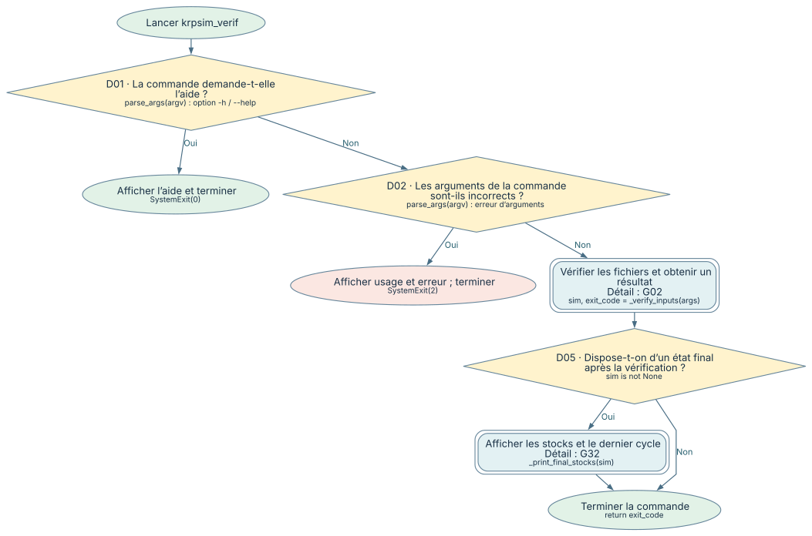
Les codes 0, 1 et 2 sont des résultats de commande. Une exception inattendue peut interrompre le parcours dans G02.
Sources : src/krpsim_verif/cli.py:25-102
Schémas liés : G02 · G32
_verify_inputs
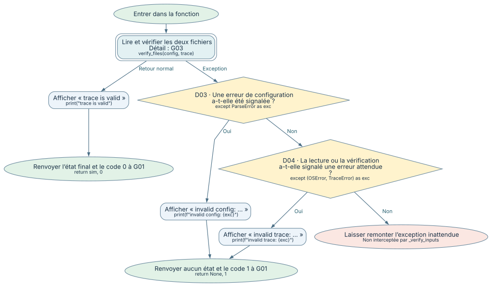
ParseError devient invalid config. OSError et TraceError deviennent invalid trace. Les autres exceptions ne sont pas interceptées.
Sources : src/krpsim_verif/cli.py:47-60
Schémas liés : G03 · G01
verify_files
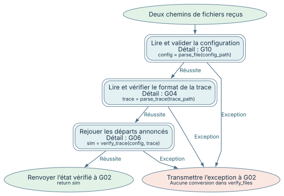
La lecture complète de la trace précède le contrôle des stocks. Une erreur de syntaxe tardive peut donc masquer un manque de ressources au début.
Sources : src/krpsim_verif/verifier.py:253-280
Schémas liés : G10 · G04 · G06 · G02
parse_trace
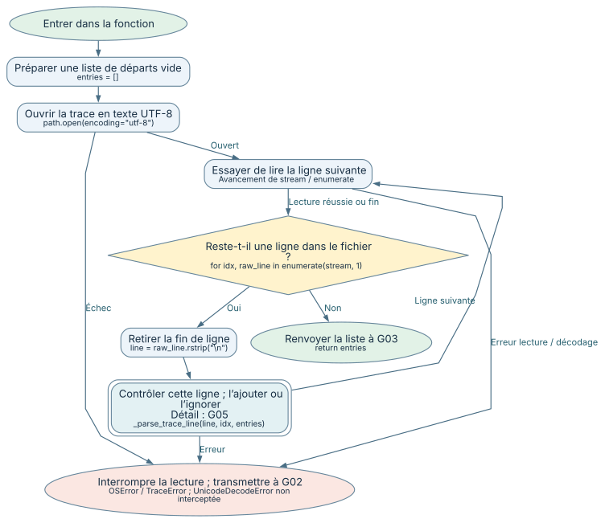
idx compte les lignes physiques. L’ouverture texte normalise les fins CRLF. Les espaces de début et de fin ne sont pas supprimés. Une erreur de décodage pendant la lecture interrompt aussi le parcours et remonte à G02.
Sources : src/krpsim_verif/verifier.py:63-90
Schémas liés : G05 · G03 · G02
_parse_trace_line
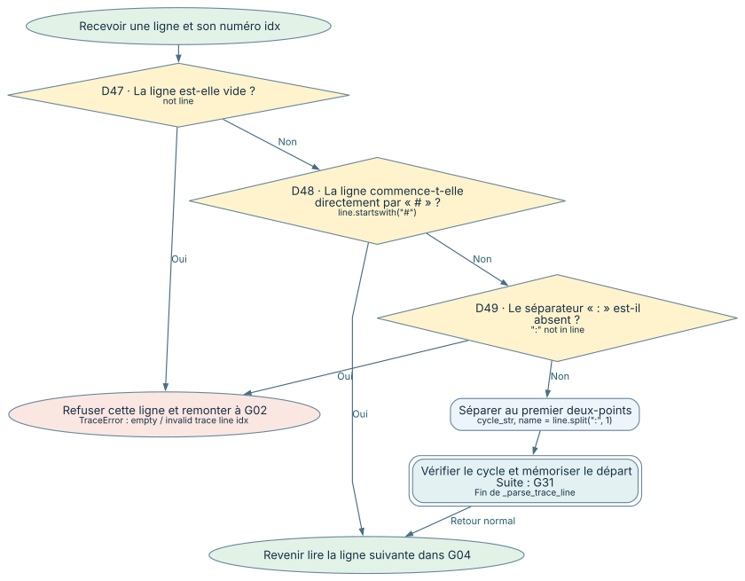
Un fichier vide n’a aucune ligne ; une ligne vide est une erreur. Le premier « : » sépare le cycle et le nom ; les autres restent dans le nom.
Sources : src/krpsim_verif/verifier.py:93-110
Schémas liés : G31 · G04 · G02
verify_trace
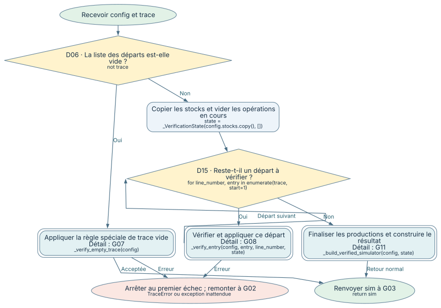
Les départs sont traités dans l’ordre de la liste. Deux départs au même cycle ne sont pas réordonnés.
Sources : src/krpsim_verif/verifier.py:218-249
Schémas liés : G07 · G08 · G11 · G03 · G02
_verify_empty_trace
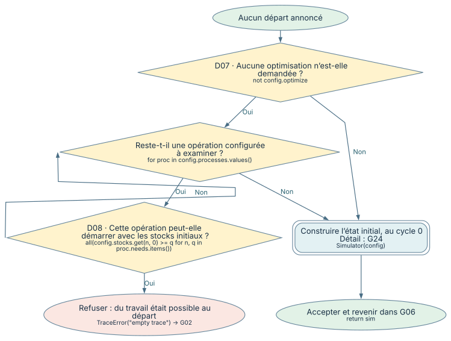
Sans optimize, une trace vide est refusée dès qu’une opération peut démarrer. Les besoins sont les ressources consommées au départ.
Sources : src/krpsim_verif/verifier.py:113-120
Schémas liés : G24 · G06 · G02
_verify_entry / _resolve_process
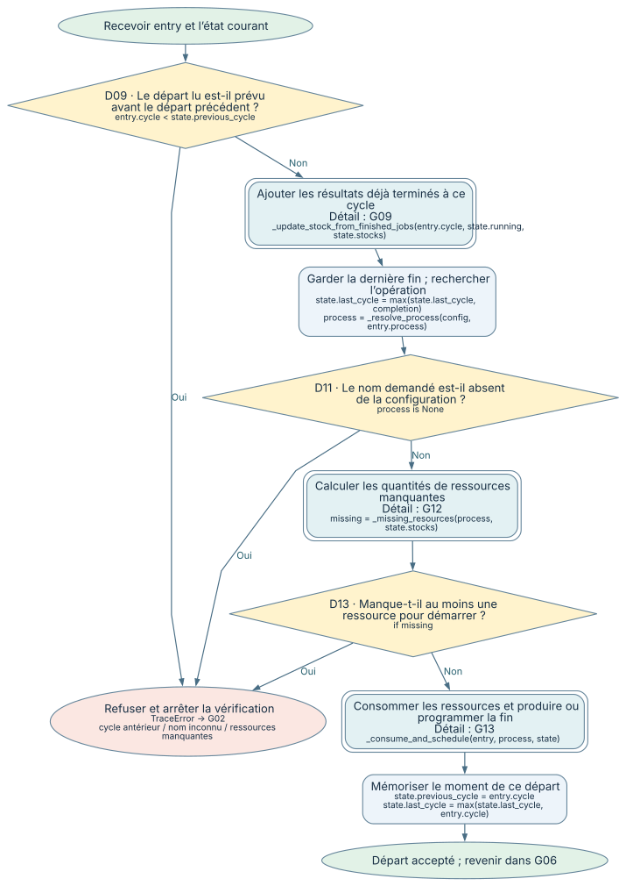
Exemple : après un départ au cycle 8, un départ au cycle 5 est refusé. Un nouveau départ au cycle 8 passe le contrôle de chronologie.
Sources : src/krpsim_verif/verifier.py:139-145,178-202
Schémas liés : G09 · G12 · G13 · G06 · G02
_update_stock_from_finished_jobs
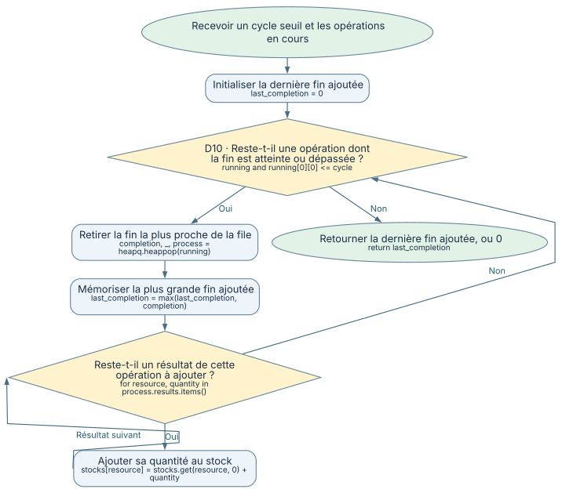
Une fin exactement au cycle demandé est incluse. Une ressource absente du dictionnaire stocks est considérée comme disponible en quantité 0.
Sources : src/krpsim_verif/verifier.py:123-136
Schémas liés : G08 · G11
parse_file
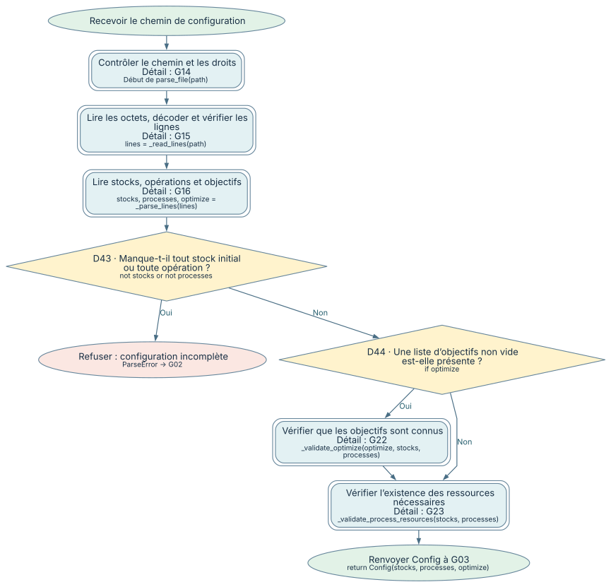
Toute ParseError interrompt la lecture et remonte à G02. La validation des objectifs précède celle des ressources utilisées par les opérations.
Sources : src/krpsim/parser.py:574-619
Schémas liés : G14 · G15 · G16 · G22 · G23 · G03 · G02
_build_verified_simulator
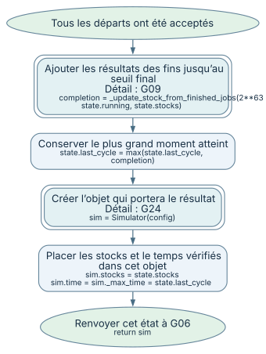
Le seuil 2**63 - 1 est fini. Une opération qui termine au-delà peut rester non créditée ; sim.trace et sim._running ne sont pas remplis avec le rejeu.
Sources : src/krpsim_verif/verifier.py:205-214
Schémas liés : G09 · G24 · G06
_missing_resources
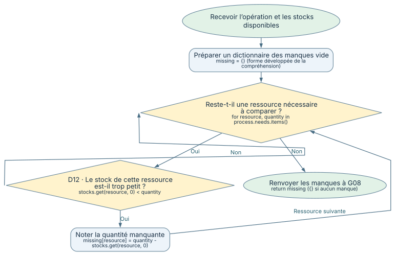
Exemple : 3 planches nécessaires, 2 disponibles → manque de 1 planche. Avoir 10 clous ne compense pas ce manque.
Sources : src/krpsim_verif/verifier.py:148-155
Schémas liés : G08
_consume_and_schedule
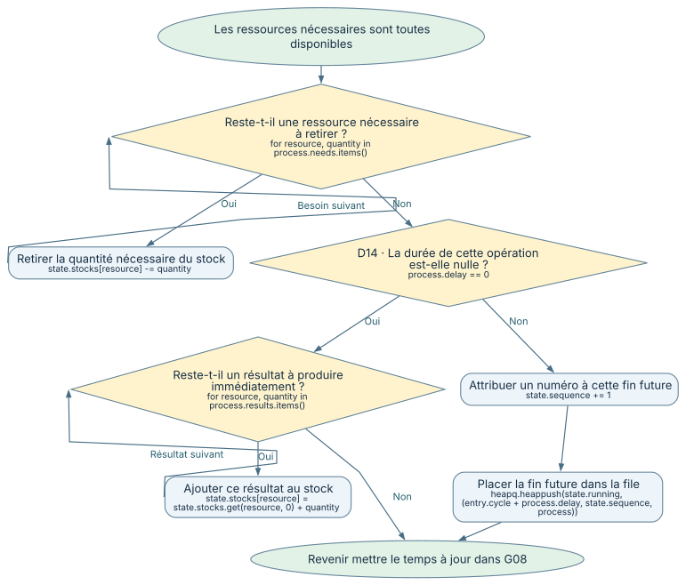
Les besoins sont consommés avant de produire, même avec une durée nulle. sequence départage les opérations qui finissent au même cycle.
Sources : src/krpsim_verif/verifier.py:158-175
Schémas liés : G08
Début de parse_file
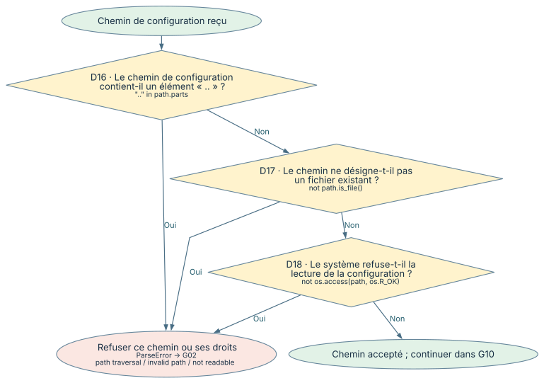
Ces contrôles concernent le chemin de configuration. Un échec disque après ces contrôles peut encore lever OSError et arriver à G02.
Sources : src/krpsim/parser.py:592-605
Schémas liés : G10 · G02
_read_lines
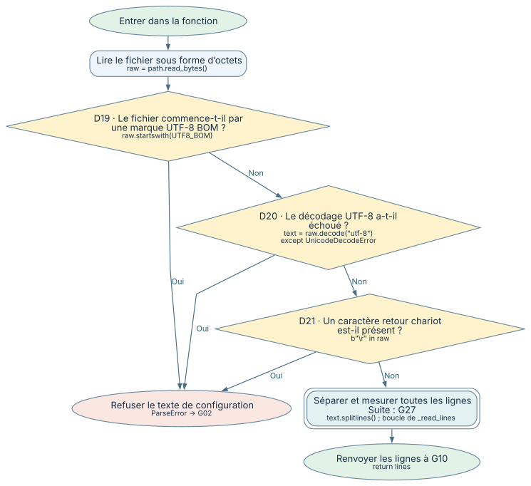
La longueur est contrôlée avant de supprimer les espaces et commentaires. Tout retour chariot CR est refusé ici, contrairement à la lecture de trace.
Sources : src/krpsim/parser.py:486-513
Schémas liés : G27 · G10 · G02
_parse_lines
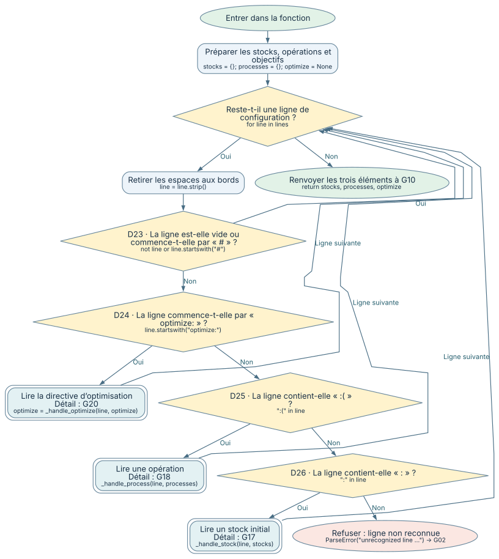
Le tri est prioritaire : commentaire ou vide, puis optimize:, puis :(, puis :. Après chaque lecture réussie, reprendre la boucle.
Sources : src/krpsim/parser.py:538-570
Schémas liés : G17 · G18 · G20 · G10 · G02
_handle_stock → _parse_stock
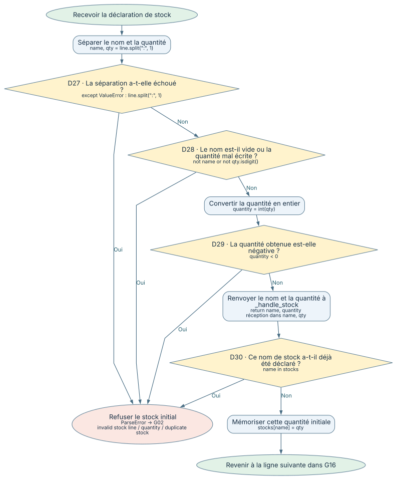
D29 est défensif : une quantité négative est normalement déjà refusée par isdigit. int peut aussi lever une ValueError non interceptée.
Sources : src/krpsim/parser.py:109-145,352-376
Schémas liés : G16 · G02
_handle_process → _parse_process
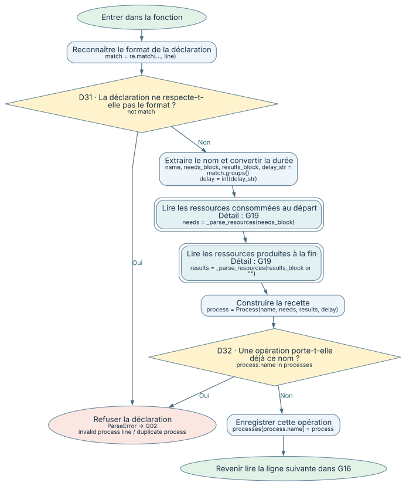
Format : nom:(besoins):(résultats):durée. Les résultats peuvent être omis sous la forme nom:(besoins)::durée. La durée 0 est autorisée.
Sources : src/krpsim/parser.py:201-245,324-348
Schémas liés : G19 · G16 · G02
_parse_resources
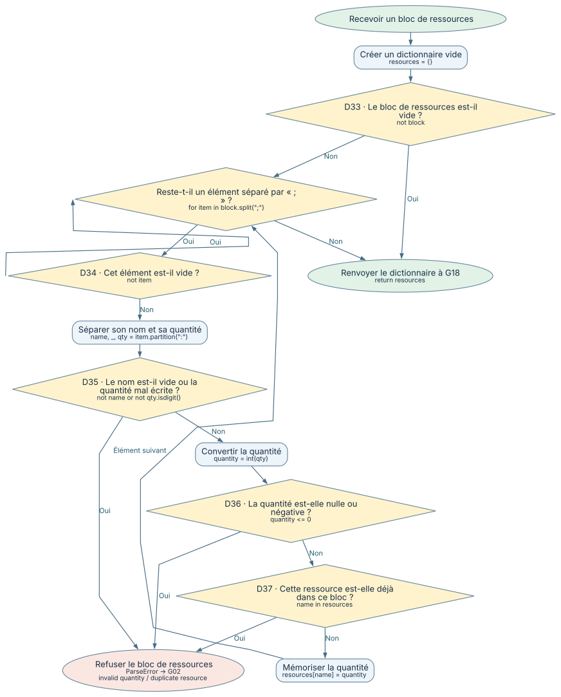
Les éléments vides entre ; sont ignorés. Dans une recette, les quantités doivent être strictement positives ; dans un stock initial, zéro est autorisé.
Sources : src/krpsim/parser.py:149-197
Schémas liés : G18 · G02
_handle_optimize → début de _parse_optimize
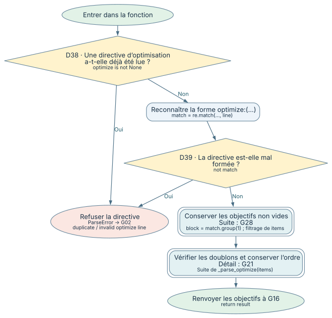
La directive peut contenir plusieurs objectifs séparés par ;. Les éléments vides sont ignorés, mais au moins un objectif doit rester.
Sources : src/krpsim/parser.py:249-278,298-320
Schémas liés : G28 · G21 · G16 · G02
Fin de _parse_optimize
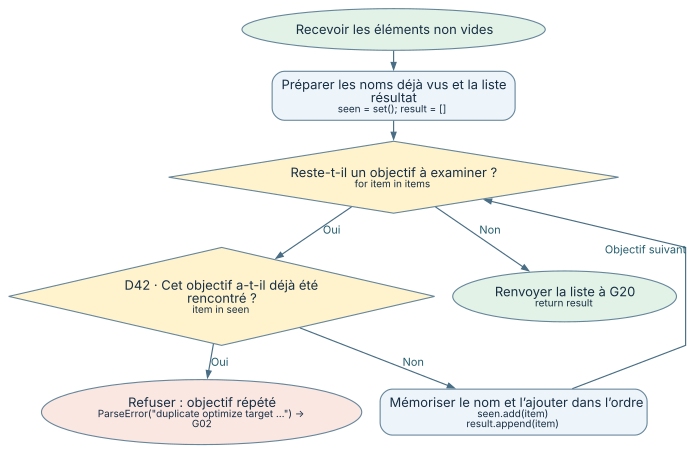
seen sert uniquement à détecter les doublons ; result garde les objectifs dans l’ordre d’origine.
Sources : src/krpsim/parser.py:280-294
Schémas liés : G20 · G02
_validate_optimize
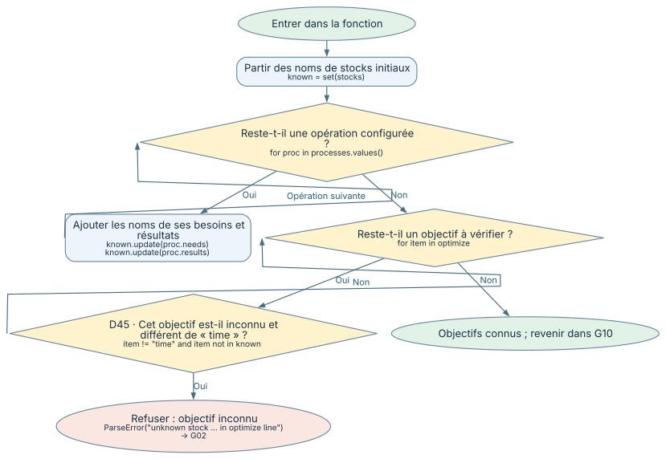
known réunit les stocks initiaux, les besoins et les résultats. Le mot time est accepté comme objectif spécial.
Sources : src/krpsim/parser.py:380-418
Schémas liés : G10 · G02
_validate_process_resources
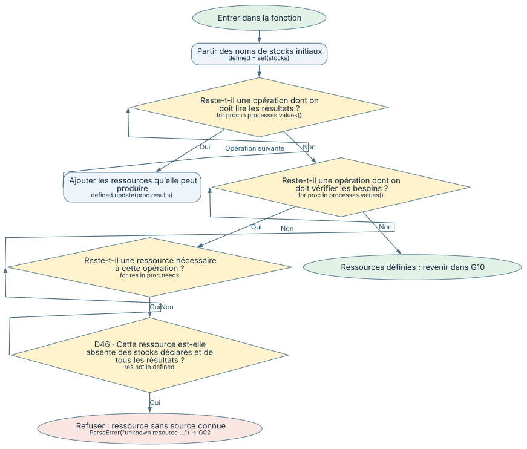
Ce contrôle ne garantit pas que la ressource soit déjà disponible ni que le graphe soit sans cycle. Chaque départ sera contrôlé plus tard dans G08.
Sources : src/krpsim/parser.py:422-463
Schémas liés : G10 · G02
Simulator.__init__
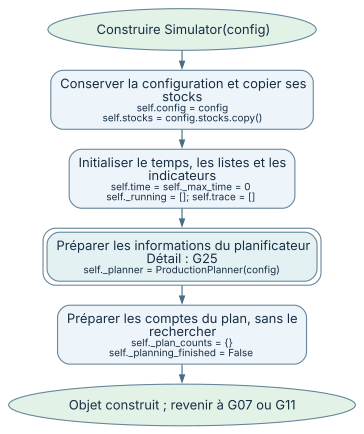
Ce constructeur ne lance pas Simulator.run. Après son retour, G11 remplace les stocks et le temps ; G07 conserve l’état initial.
Sources : src/krpsim/simulator.py:61-104
Schémas liés : G25 · G07 · G11
ProductionPlanner.__init__
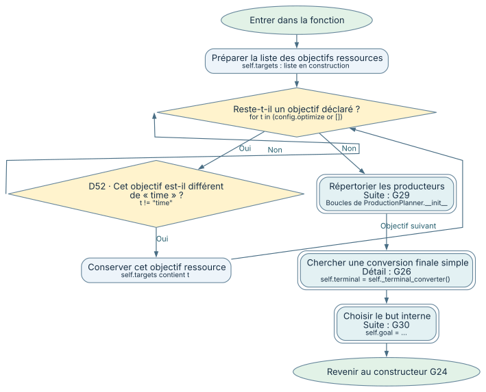
Cette initialisation s’exécute lors de la construction du résultat. Elle ne recherche pas un meilleur ordonnancement et ne lance aucune opération.
Sources : src/krpsim/optimizer.py:59-73
Schémas liés : G29 · G26 · G30 · G24
ProductionPlanner._terminal_converter
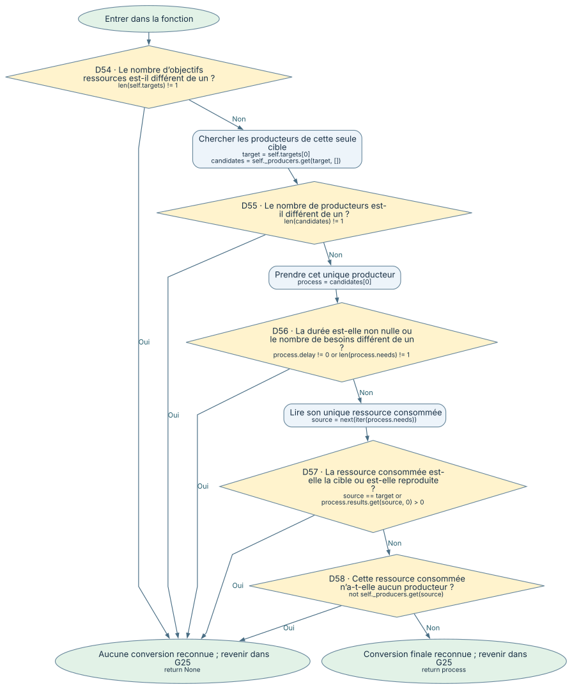
Une reconnaissance impossible renvoie None : ce n’est pas une erreur de trace. Les durées issues d’une configuration valide sont toujours positives ou nulles.
Sources : src/krpsim/optimizer.py:81-98
Schémas liés : G25
Suite de _read_lines
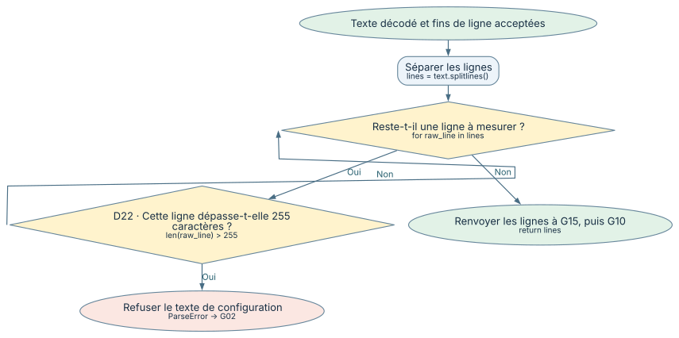
Le contrôle se fait sur chaque ligne brute, avant de retirer les espaces ou les commentaires.
Sources : src/krpsim/parser.py:505-513
Schémas liés : G15 · G10 · G02
Milieu de _parse_optimize
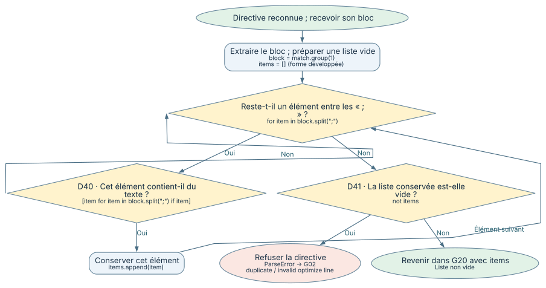
Une directive présente doit conserver au moins un objectif. Les séparateurs supplémentaires sont tolérés.
Sources : src/krpsim/parser.py:272-278
Schémas liés : G20 · G02
Boucles de ProductionPlanner.__init__
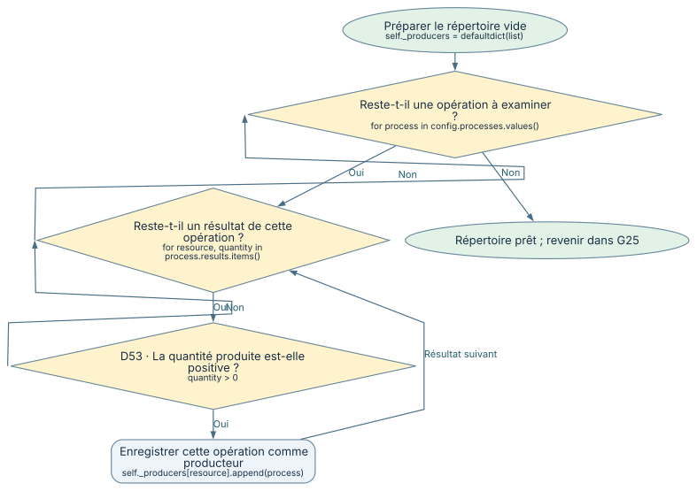
Le dictionnaire associe chaque ressource à la liste des opérations qui en produisent une quantité positive.
Sources : src/krpsim/optimizer.py:63-67
Schémas liés : G25
Fin de ProductionPlanner.__init__
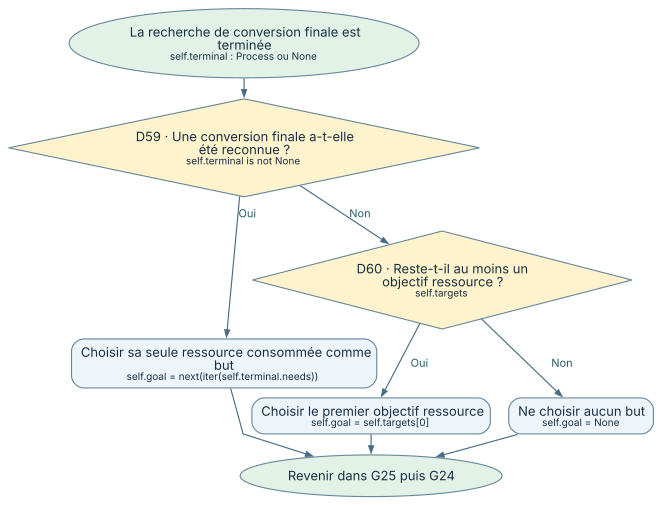
Ces champs sont préparés sans lancer de recherche de plan. Le vérificateur n’utilise pas ce but pour imposer l’atteinte d’un objectif.
Sources : src/krpsim/optimizer.py:68-73
Schémas liés : G25 · G24
Fin de _parse_trace_line
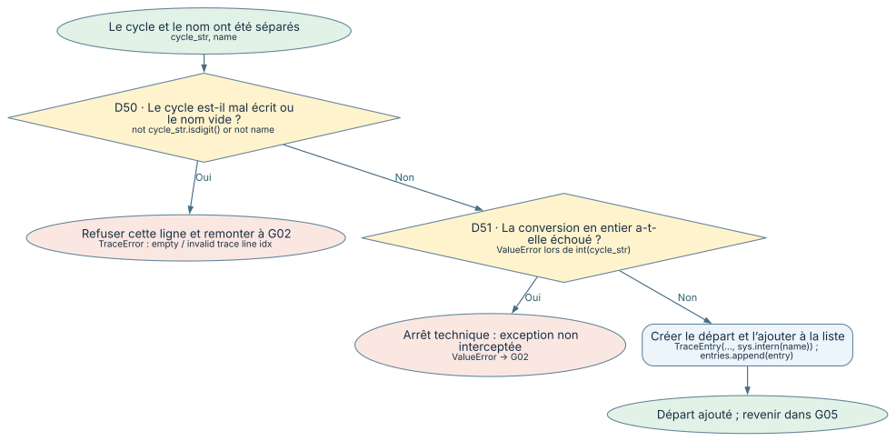
isdigit accepte certains chiffres Unicode que int ne convertit pas. Exemple : ² passe isdigit, puis int lève ValueError ; le nom est conservé sans normalisation.
Sources : src/krpsim_verif/verifier.py:107-110
Schémas liés : G05 · G02
_print_final_stocks → Config.all_stock_names
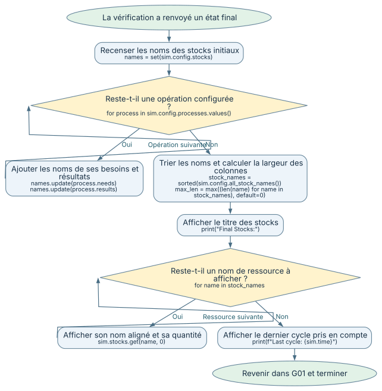
Tous les noms connus sont affichés, même si leur stock final vaut zéro. Les colonnes sont alignées sur le nom le plus long ; si aucun nom, la largeur vaut 0.
Sources : src/krpsim_verif/cli.py:63-71 ; src/krpsim/parser.py:75-100
Schémas liés : G01